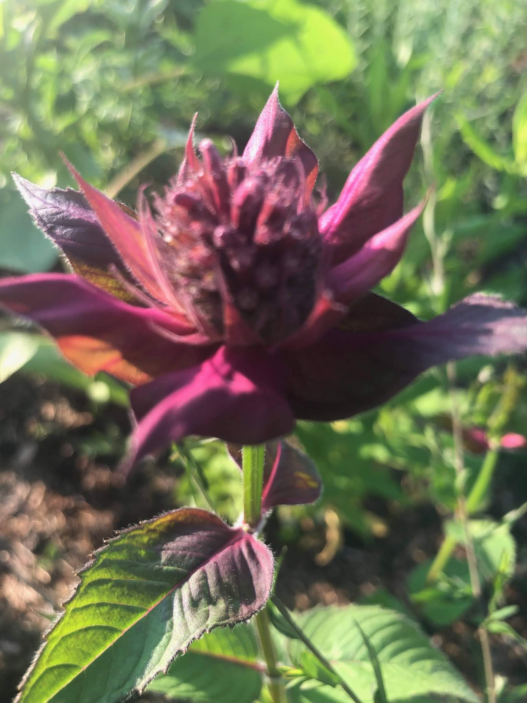
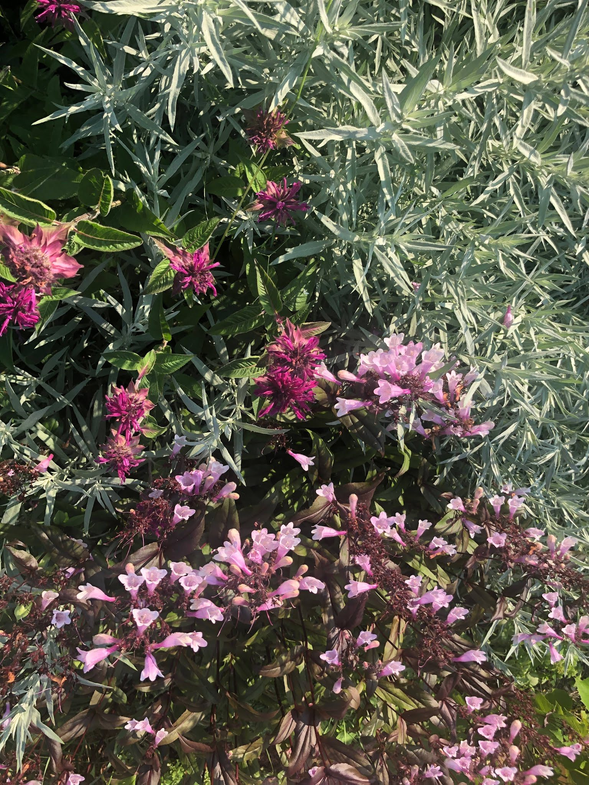
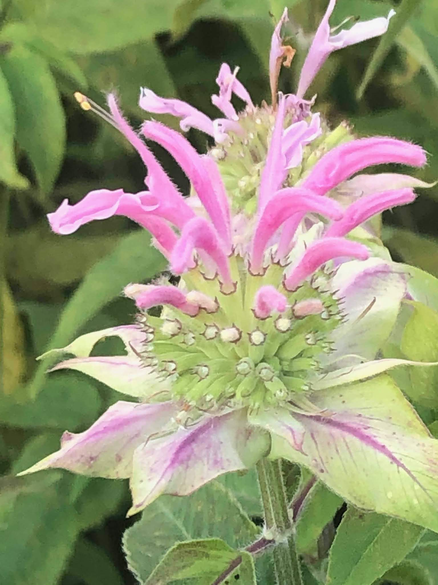
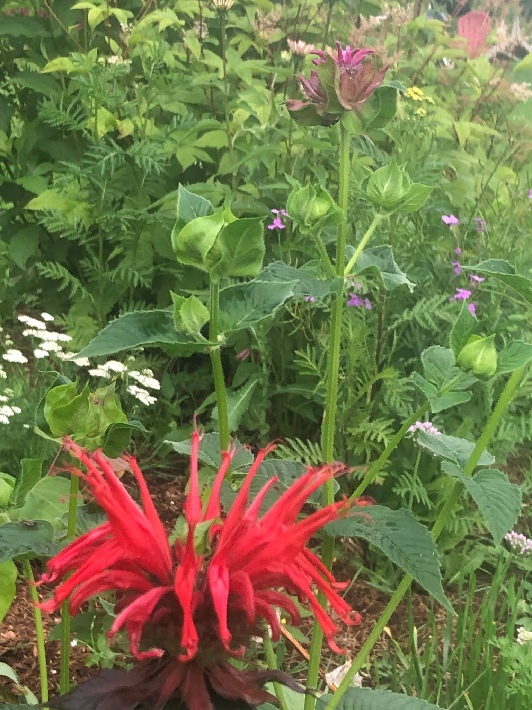

August 2019
Bee Balm and Echinacea
Bee balm and echinacea are in bloom in our garden. When it comes to these flowers, the hot summer Echinacea purpurea ‘Meringue’ is quite stunning, with their bright white double bloom, these flowers stand out in a backdrop of green foliage. I recently purchased Echinacea ‘tomato soup’ from Rocky Dale Garden in Bristol, Vermont to add some bright red to the garden for the fall. The hot summer sun, high humidity, and frequent summer thunderstorms have kept these blooms vibrant and prolific.

Our three colors of bee balm have bloomed in various parts of the garden. I’m happy to say it has been planted in all of our garden beds and is attracting bees of all kinds, most notable are the many bumble bees that are now listed as endangered in the United States. Learn more about Bee Balm’s rich history in the U.S.



Filed in the garden journal · August 2019